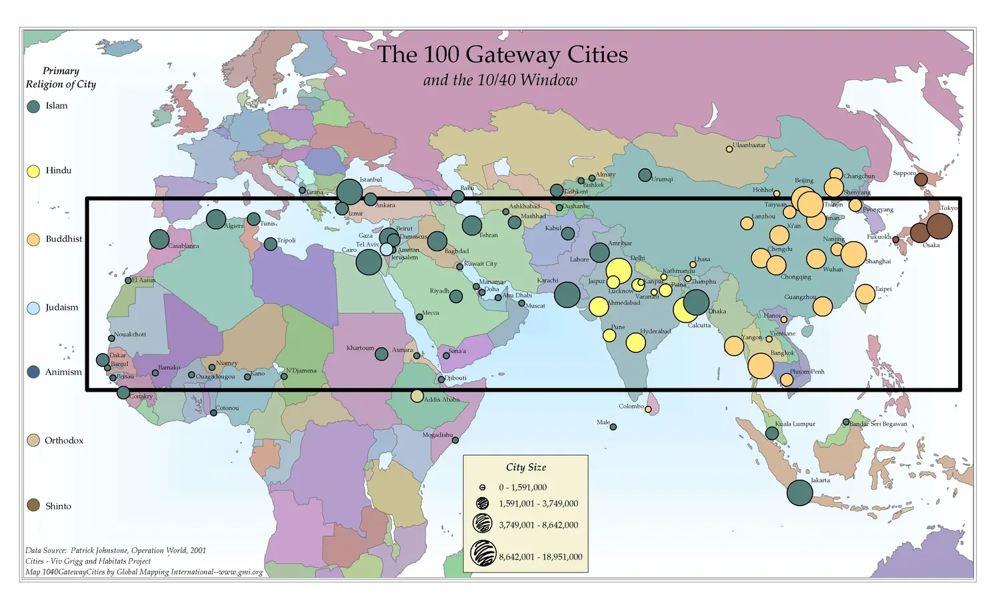

Scale creates problems you can't fix remotely. A training process that breaks down without the original team present will break down in twenty communities, not just one. The goal of a pilot is to prove that a local person can run the system alone — and teach it to the next person without help.

What a good pilot looks like
A pilot isn't a soft launch or a demo. It's a real-world test that surfaces every problem before they become problems in ten other places. A pilot succeeds when the local lead can run the session without guessing and teach someone else without being prompted.
- One trusted site — a partner location where honest feedback is guaranteed, not a site chosen to look good
- One trained local lead — a specific person who can unpack, power on, connect, share, and teach the process independently
- Printed and digital handouts — left with the kit so the process continues after the team leaves
- Documented blockers — power failures, language gaps, device incompatibilities, content that didn't work — written down, not just noted verbally
How to roll out carefully
- Choose the pilot site for honesty, not appearances
Pick the location where a trusted partner will tell you what's broken, not what you want to hear. A site that reports zero problems is a site that isn't reporting honestly.
- Train one local lead completely
Make sure one person can unpack, power on, connect, browse the library, share a resource, and explain the whole process to someone else — all without you in the room.
- Leave the PDF handouts with the kit
Printed guides and digital copies on the device itself are what keep the process going after the visiting team leaves. Don't pack them with the team.
- Measure simple, honest reach
Track the numbers that are actually verifiable: people trained, devices connected, files shared, groups served. Don't round up or project forward — report what actually happened.
- Document every blocker
Write down power problems, language mismatches, device incompatibilities, content that didn't open, and steps that confused people. These are the improvements that make the second pilot better.
- Fix problems before scaling
Don't send a second kit to a new location until the first pilot process is clean enough that a local leader can run it without corrections. Scale multiplies what exists — good and bad.
Reach is credible when it is reported simply and honestly. One local leader who can teach the next person is more valuable than fifty kits sitting in a storeroom.
Download the Rollout and Reach guide as a printable PDF for board presentations and field planning.
Download Rollout and Reach PDF